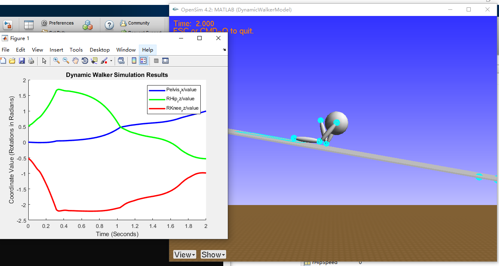

Windows环境下OpenSim源码安装记录
参考链接
Step1 安装依赖软件
安装VS2015或VS2017
- VS2017的安装选项
- VS2017的安装选项
安装git
安装cmake
以管理员打开PowerShell，运行一下代码（本步骤需科学上网）
1
choco install python2 jdk8 swig
Step2 编译依赖项
- 打开PowerShell，且切换至合适路径，下载源码
1
git clone https://github.com/opensim-org/opensim-core.git
- 新建编译文件夹，并进入
1
2mkdir opensim_dependencies_build
cd .\opensim_dependencies_build - 生成编译配置文件
1
cmake ..\opensim-core\dependencies -G"Visual Studio 15 2017 Win64" -DCMAKE_INSTALL_PREFIX="..\opensim_dependencies_install"
对于VS2015，输入以下指令
1 | cmake ..\opensim-core\dependencies -G"Visual Studio 14 2015 Win64" -DCMAKE_INSTALL_PREFIX="..\opensim_dependencies_install" |
- 开始编译依赖项（包括Simbody 、Biomechanical-ToolKit Core、docopt.cpp等）
1
cmake --build . --config RelWithDebInfo -- /maxcpucount:8
这一步可能会出现如下错误
这个错误是由于源码中的部分文件含有中文系统无法识别的字符，打开查看如下文件
所有和加速度有关的符合都有乱码。在不改系统语言的情况下，可以将文件中的乱码删除，重新编译即可
Step3 编译源码
- 移动路径，并新建源码编译文件夹
1
2
3cd ..
mkdir opensim_build
cd .\opensim_build - 编译配置
1
cmake ..\opensim-core -G"Visual Studio 15 2017 Win64" -DCMAKE_INSTALL_PREFIX="..\opensim_install" -DOPENSIM_DEPENDENCIES_DIR="..\opensim_dependencies_install" -DBUILD_JAVA_WRAPPING=ON -DBUILD_PYTHON_WRAPPING=ON -DWITH_BTK=ON
出现错误
1 | Could NOT find PythonInterp: Found unsuitable version "2.7.17", but |
貌似对Python版本的要求不一样了，再装一下Python3，并写在Python2
1 | choco install python3 |
重新配置
- 开始编译
1
cmake --build . --config RelWithDebInfo -- /maxcpucount:8
又出现错误
看起来是Java的问题，发现swig版本为4.0.1，要求是3.0.8以上，因此重装swig3.0.8版本
1 | choco install swig --version 3.0.8 --force |
删除
opensim_build文件夹内容后，重新配置并编译，通过（耗时较长）
- 进行测试
1
ctest --build-config RelWithDebInfo --parallel 8
Matlab部分的是没问题，Python好像有点问题，暂时不用Python，不管它
- 安装到指定文件夹
1
cmake --build . --config RelWithDebInfo --target install -- /maxcpucount:8
安装完成
Step4 添加环境变量
- 将
<FULL-DIR>\opensim_install\bin路径添加到系统的全局变量
Step5 配置Matlab
在Matlab运行如下文件配置OpenSim，之后重新打开Matlab即可调用OpenSim接口
Step6 简单测试
测试MATLAB调用
1
2import org.opensim.modeling.*;
model = Model();测试示例程序
1
opensim_install\Resources\Code\Matlab\Dynamic_Walker_Challenge\DesignMainStarter.m
